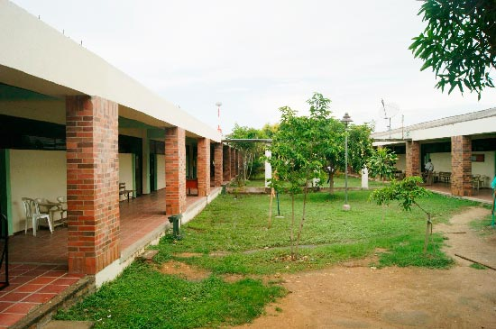

la universidad popular del cesar es una institución autónoma, independiente e innovadora que propicia el pluralismo, la tolerancia y el respeto de las ideas; que busca la excelencia académica e imparte a sus estudiantes una formación crítica y ética para afianzar en ellos la conciencia de sus responsabilidades sociales y cívicas, así como su compromiso con el entorno.
Los estudiantes de la upc en especial los ingenieros de sistemas son conocidos por ser muy inteligentes y amables.

Nuestra universidad cuenta con un diseño contemporaneo donde la comodidad y el lujo para docentes y estudiantes es lo mas importante.